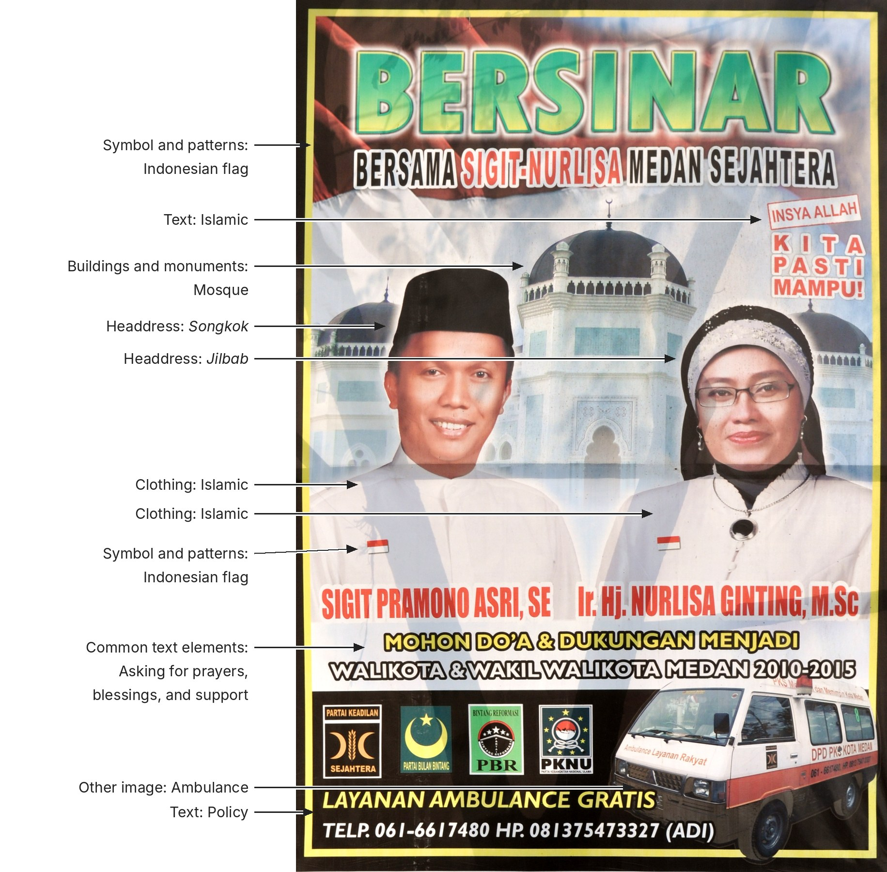
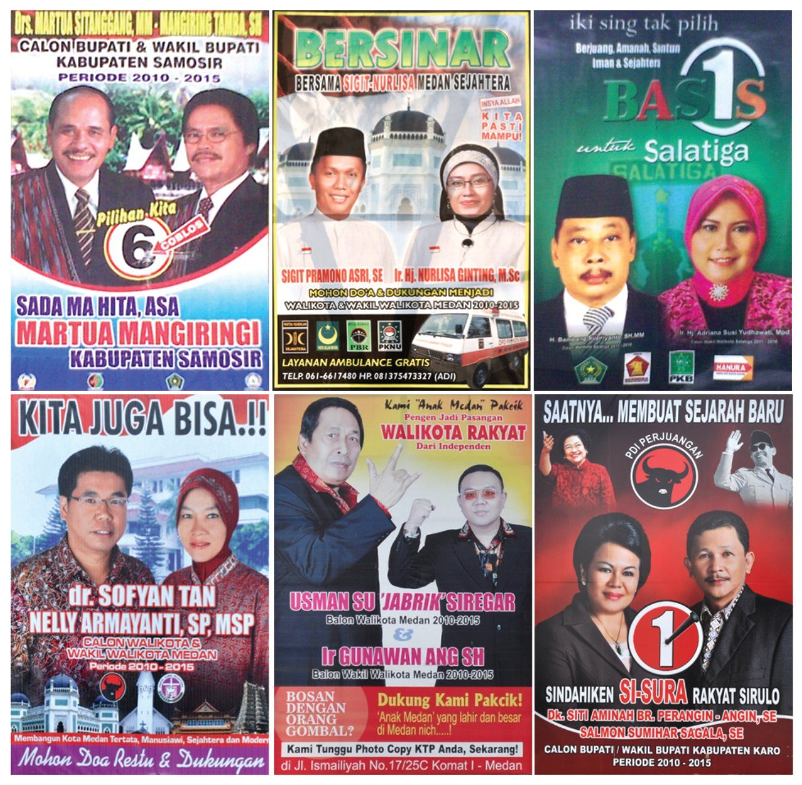

Data & Papers › Dataset
Indonesian Election Posters
Between 2009 and 2012 I photographed over 25,000 election posters, many from the back of a motorbike, in Indonesia’s legislative and regional head elections. Each poster is coded for what it shows and says, including its appeals to ethnic and religious groups. The collection is the main source for my book, Bonding, Bridging, & Bypassing (Oxford University Press, 2024).
About the data
- Elections
- The 2009 legislative elections (national, provincial and district legislatures) and regional head elections for governors, mayors and regents, 2010–2012.
- Collection
- Over 25,000 posters, photographed by me and by a network of researchers across Indonesia.
- Coded set
- 3,962 unique posters from 2,148 candidates in 129 constituencies across 20 provinces, 1,501 of them from regional head elections (the set used in the journal articles; the book uses an updated set of 3,966 posters from 2,152 candidates).
- Coded for
- Candidates’ clothing and headdress; images, symbols and buildings; supporting groups and public figures; party details; and all text, machine-coded with dictionaries of religious, indigenous and nationalist words.
- Reliability
- Krippendorff’s alpha of about 0.9 for the coding of religious clothing and imagery (see the Ethnic Campaign Appeals appendix).
- Materials
- Codebook (17 pages) · Book supplementary materials
How posters were coded


Examples


Papers using the data
- 2024 Bonding, Bridging, & Bypassing: Understanding Ethnic Politics in Diverse Societies Oxford University Press.
- 2023
Ethnic Campaign Appeals: To Bond, Bridge, or Bypass?
Political Communication 40(1): 92–114.
In a time of rising ethno-nationalist politics and polarization, efforts to understand why some electoral candidates choose to politicize ethnicity while others do not have become increasingly urgent. One factor inhibiting our understanding in this area is the paucity of systematic measures of ethnic appeals. To help in rectifying this gap, I present an approach to identifying and measuring different types of ethnic campaign appeals – termed bonding and bridging appeals, respectively. I then apply that approach to an original dataset of over 1,500 election posters from almost 250 candidates competing in Indonesian elections. The findings indicate that candidates made ethnic bonding appeals if their ethnic group was politically viable in terms of both size and the lack of social constraints on appealing to that group. Meanwhile, candidates from nonviable groups bridged across ethnic groups or bypassed ethnicity entirely. When candidates belonged to two ethnic categories, they used the simple heuristic that bonding trumps bridging to guide their appeal strategy. These findings illustrate the importance of looking beyond ethnic demographics and also casts doubt on the broadly accepted expectation that candidates will appeal to the ethnic group that is of minimum winning size. Ultimately, the article helps us understand candidates' communication strategies and why ethnic diversity actually results in less exclusivist ethnic politics.
- 2023
Islamic Political Parties and Election Campaigns in Indonesia
With Jeremy Menchik. Party Politics 29(4): 622–635.
Islamist political parties are a structural feature of politics across the Muslim world, raising persisting questions for scholars of democracy. Under what conditions will Islamists moderate to support democracy and pluralism? Under what conditions will they adopt more exclusive behavior? Taking a fresh approach, we focus on electoral competition and the conditions under which Islamic party candidates campaign using either inclusive nationalist appeals or exclusively Islamic appeals. Using a unique data source, we coded the appeals contained on the campaign posters of 572 Islamic party candidates in Indonesia. We found that demographics, urban-rural differences, and the level of government office (i.e., national or regional) affected the inclusive or exclusive nature of campaigns. We also highlight differences in appeals made by candidates from Muslim democratic and Islamist parties. The study illustrates the effectiveness of posters as a data source and presents a new approach to understanding the behavior of Islamic parties.
- 2022
Visualizing Politics in Indonesia: The Design and Distribution of Election Posters
International Journal of Communication 16: 4187–4209.
Where studies have shown that visuals are the primary means of political communication, research continues to focus largely on text-based information. To add to our understanding of visual-political communications, this article analyses Indonesian election posters since the 1950s. Drawing on historical materials and on a content analysis of 4,000 election posters, it asks why election posters have been designed and distributed in particular ways. Findings indicate that in the past, posters used singular, though powerful, social symbols to mobilize demographic groups behind political parties. However, contemporary posters are more visually complex and more candidate-centered, making arguments as to what the candidates represent. Furthermore, although the wide distribution of posters has always been used to signify strength, the number of posters has proliferated in recent elections. These trends can be explained by underlying social forces, advances in technology, institutional reforms, and the identities and types of parties and candidates.
Using and citing the data
Coded subsets of the posters, with the codebook and the code that reproduces each paper’s results, are published as replication packages on Harvard Dataverse. The full collection of poster images is not yet public. Please cite the paper you draw on and its replication package; each Dataverse page gives the full data citation.
Bahasa Indonesia
Antara 2009 dan 2012 saya memotret lebih dari 25.000 poster pemilu dari atas sepeda motor, dalam pemilu legislatif dan pilkada di sebagian besar provinsi Indonesia. Setiap poster dimasukkan ke dalam basis data dan dikode menurut isi dan seruannya kepada pemilih, termasuk kepada kelompok etnis dan agama. Koleksi ini adalah sumber utama buku saya, Bonding, Bridging, & Bypassing.